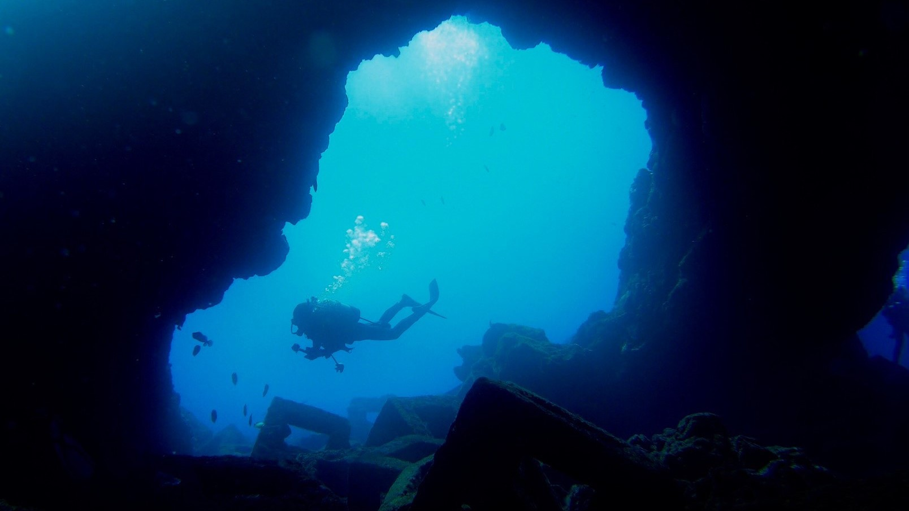

Spot
ダイビングスポット

伊豆大島

通称IOPは東伊豆にあり、レジャーダイビング発祥の地と言われており、多種多様の海洋生物を見ることが出来ます。ダイナミックな地形もあり初心者も楽しめます。
伊豆海洋公園
西伊豆にあり、ダイナミックかつ海洋の安定性があるため、初心者から上級者まで楽しめる。色んな視点で見ることで同じスポットでも楽しさが違ってきます。
大瀬崎
海の綺麗さは国内トップクラスを誇る。水中に差し込む太陽光が反射し海面が神秘的な青色に輝く「青の洞窟」はダイバーなら一生に一回は見てみたい神秘的な景色です。
沖縄・宮古島
竹芝からフェリーで２時間。
海洋の影響を強く受け気温の寒暖差が小さく、黒潮の流れのため温暖多湿な海洋性気候が特徴。大島名物のウミガメと一緒に泳いでみよう